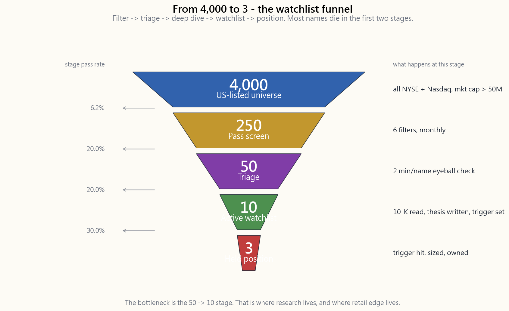
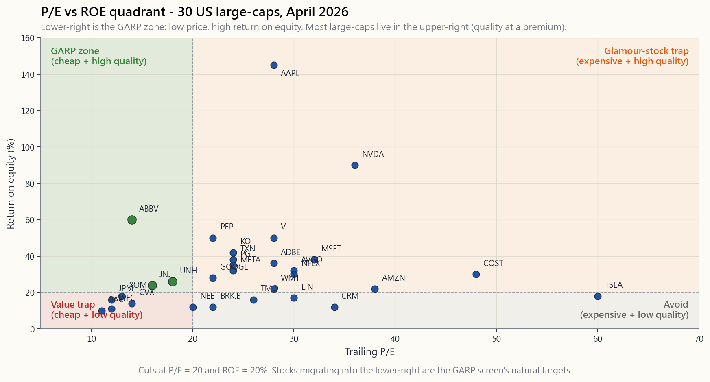

Side Lesson 27: Building a Watchlist — Screens that Find Quality at Value
1. Why This Is Important
There are roughly 4,000 stocks listed on the major US exchanges (NYSE + Nasdaq, excluding ADRs, micro-caps under $50M, and the OTC ghost-mall). No retail investor — and very few institutional ones — can read a 10-K and an earnings call transcript on every one of them each year. The number you can actually own with conviction is not 4,000. It is somewhere between 5 and 20.
The job of a screener is to walk the funnel for you. You start with 4,000 names, eliminate 95% with three or four numerical filters, hand the survivors to your eyes and your spreadsheet, and end up with a watchlist of 10-15 names you actually understand plus a tighter buy-list of 3-7 you currently own. Doing this without a screener is like trying to find a wedding dress by walking through every store on Fifth Avenue. Doing it with one is like asking the saleswoman to pull only the white silk size-6 gowns.
Four reasons to take screening seriously:
The single highest-leverage decision you will make is which 30 names enter your due-diligence queue, not which one of those 30 you eventually buy. A bad shortlist makes good selection impossible; a good shortlist makes mediocre selection profitable.
has a thesis embedded in it. A GARP screen embeds *I believe ROIC above the cost of capital, bought below 1.2x PEG, compounds*. A deep-value screen embeds *I believe statistical cheapness in solvent businesses mean-reverts*. Writing the screen forces you to write the thesis.
the SEC EDGAR plumbing that makes all of this work. Run the same process on a Shenzhen B-share index and the data layer breaks. The $2B floor used in the GARP screen below is not a statistical convenience — it is Horace's no-penny-stock rule with a number on it: sub-billion names live in the casino tier (Side 14 makes the case in detail — wide spreads, manipulable float, thin disclosures, participants who are not investors), and the watchlist process exists above that line by design, not by accident.
"Cathie said it on CNBC" is not willpower; it is a numerical tripwire that says PEG > 1.5 -> no further work. Pre-committed filters convert the impulse buy into a process buy. (The market can stay irrational longer than you can stay solvent — and longer than your conviction, too.)

The funnel above is the canonical pipeline: **filter -> due-diligence -> watchlist -> position**. The numbers will not match yours exactly, but the shape should — most names die in the first two stages.
2. What You Need to Know
2.1 The Tool Stack — Free, Brokerage, and Paid
Three tiers of screener exist. The differences are not "feature count" but data depth, history length, and cross-sectional rigour.
Free tier (good enough for 90% of retail investors).
- Finviz (
finviz.com) — fastest screener on the open web. Eighty-plus
- Yahoo Finance Screener — fewer filters, but free, ad-supported,
- TradingView — strongest if you also chart. Built-in screener
- Schwab StreetSmart Edge / Fidelity Active Trader Pro — your
Paid tier (worth it if you run weekly screens or hold >20 names).
- Stock Rover ($28-$40/month, $79/yr Essentials) — 600+ metrics
- TIKR.com ($24-$30/month) — institutional-style data feed
- Roic.ai ($14/month) — clean ROIC-centric layout, useful for
- YCharts / Koyfin (free + $39/month tier) — chart-first; Koyfin
You do not need all of these. Pick one free + one paid and stop. The marginal hour spent learning a third platform is better spent reading a 10-K.
2.2 Screen 1 — GARP (Growth at a Reasonable Price)
GARP is Peter Lynch's screen, formalised. The thesis: *pay no more than 1x PEG for a high-ROIC business growing free cash flow*. It is the workhorse screen for tranche-1 (long-term compounders).
| Filter | Threshold | Why |
|---|---|---|
| Market cap | > \$2 B | liquidity + audited Big-4 books |
| PEG (forward) | < 1.2 | growth not already priced in |
| FCF growth (5y) | > 10% | thesis-confirming cash dynamics |
| ROIC (TTM) | > 15% | spread above ~10% cost of capital |
| Debt / equity | < 1.0 | survives a credit cycle |
| Gross margin | > 40% | pricing power floor |
A GARP screen run on the S&P 1500 in April 2026 returns roughly 80-120 names. Typical hits today (representative, not a buy list): MSFT, GOOGL, V, MA, ADBE, NOW, INTU, TXN, MCO, MSCI, AVGO, LIN, ANET, CDNS. Not all are cheap right now — the screen is the entry filter, not the buy decision. PEG below 1.0 is rare in 2026 because the index is trading at a 22x forward P/E vs a long-run mean of 16x. Loosen to 1.5 and you get 200+ names; tighten to 0.8 and you get 15 — which is the right number for a deep-dive queue.
2.3 Screen 2 — Deep Value (Statistical Cheapness, Solvent)
Deep value is the Graham screen, the academic HML factor, the Bogle "reversion to the mean" version. The thesis: *the market over-discounts boring, slow, or temporarily impaired businesses, and a basket of them mean-reverts.*
| Filter | Threshold | Why |
|---|---|---|
| Market cap | > \$500 M | tradeable, audited |
| P/E (TTM) | < 12 | bottom quintile |
| P/B | < 1.5 | balance-sheet protection |
| Current ratio | > 2.0 | survives 12 months without a roll |
| FCF (TTM) | > \$0 | not a value trap |
| Debt / EBITDA | < 3 | rate-cycle resilient |
Deep value is the screen you run into market panics, not out of them. April 2026 is mid-cycle, the screen is sparse — energy mid-caps (DVN, MRO, OVV), some regional banks (FNB, RF, CFR), and a handful of consumer staples (KMB, K, GIS). In March 2020, the same screen returned 600+ names. The screen does not change; the market does.
2.4 Screen 3 — Quality Compounder (10-Year Track Record)
The Munger screen. The thesis: *a great business at a fair price beats a fair business at a great price*. This is the screen you keep open in the background and run quarterly.
| Filter | Threshold | Why |
|---|---|---|
| ROE | > 20% in each of last 5 years | stable, not levered up |
| Gross margin | > 40% | moat indicator |
| Operating margin | > 15% | converts revenue to cash |
| FCF positive | 8 / 10 years | proven through a cycle |
| Debt / equity | < 0.8 | optionality, not leverage |
| Buybacks > issuance | net negative shares | management aligned |
This is the most punishing screen of the four — it returns about 40 names in any reasonable market. April 2026 hits include AAPL, MSFT, V, MA, COST, ULTA, MCO, MSCI, ROL, PAYX, AZO, TROW, FAST. There is no PEG/PE filter here on purpose. This screen finds the universe; valuation enters at the watchlist stage. You wait for one of the 40 to fall 25-35% below its 5-year median EV/EBITDA, then you act.
2.5 Screen 4 — Recovery (52-Week-Low Quality)
The contrarian screen. The thesis: *good businesses occasionally trade near their 52-week low for reasons that have nothing to do with long-term economics. Catch them before the market re-rates.*
| Filter | Threshold | Why |
|---|---|---|
| Price | within 10% of 52-week low | psychologically hated |
| Gross margin | > 25% | rules out commodity wreckage |
| Working capital | > 0 | survives the next 12 months |
| Net debt / EBITDA | < 4 | solvable balance sheet |
| Insider buying (90d) | > 0 net | management agrees |
| Short interest | < 8% of float | not a known short-seller target |
Recovery screens are the easiest to mis-execute (the "falling knife" problem) and the most rewarding when right. Insider buying + short interest filters are the quality gates. April 2026 candidates: a small handful of regional banks post-2024 deposit-flight, a couple of consumer-discretionary mid-caps that missed Q1, and one or two healthcare names hit by tariff noise. Limit position size to 0.5-1% of the portfolio — these are tranche-4 (opportunistic), not tranche-1.

The scatter above is the visual frame. Anything in the lower-right quadrant is a candidate; anything in the upper-left is the "glamour-stock trap" (high P/E, mediocre ROE). Most US large-caps in April 2026 sit in the upper-right — quality at a premium. The GARP screen is, geometrically, *find the names heading into the lower-right.*
2.6 The Watchlist Pipeline — From Screen to Position
The screen is step 1 of a five-step funnel:
hits.
anything with restated financials, going-concern language, SEC investigation, or sub-$200M average daily dollar volume.
for compounders), the most recent earnings transcript, and one
short-seller report if one exists. Build a one-page thesis with
five lines: *what they do, how they make money, what could kill
it, what is it worth, what is it trading at.* (See side02_reading_10k.md.)
price triggers — the price at which you would buy, not the price you wish you had bought at. A watchlist without triggers is a daydream.
1/3 at trigger, 1/3 if it falls another 10%, 1/3 if it falls another 10% on no thesis-breaking news. The barbell says you are wrong sometimes; the staggered entry pays you to be wrong about timing.
The buy-trigger is the single most underrated discipline. Decide the price at the desk, in good light, with the 10-K open and CNBC off. By the time the price arrives, the market will be telling you not to buy.
2.7 Avoiding the Common Pitfalls of Screening
Three traps eat 80% of screening returns:
Trap 1 — Optimising on the back-test. The temptation to keep adding filters until the screen returns "all winners" historically is irresistible and fatal. Every additional filter narrows your universe and adds in-sample bias. Stop at 6 filters. Ever. (See week46_backtest_validator.html.)
Trap 2 — Confusing screen output with research output. The screen tells you which 50 names are worth investigating. It tells you nothing about whether you should own them. The 50->10 stage is where your edge actually lives.
Trap 3 — Not running the screen on yourself. Once a year, run the four screens with your own current holdings as the input universe. If a position you currently own does not appear in any of the four screens, you are holding it on inertia, not thesis. Either re-justify it from scratch or sell.
3. Common Misconceptions
curve-fitting noise. The marginal filter typically removes more future winners than future losers.
screens are supposed to return 0-10 names in a frothy market. An empty screen is a regime signal, not a tool failure.
your brokerage's screener will get you 90% of the way to Stock Rover for a passive long-only book. Pay up only when your hours start to outweigh your money.
which is wrong on average and very wrong at turning points. Treat PEG as a triage filter, not a valuation conclusion.
bank with 15x equity multiplier and 1.5% ROA has 22% ROE and is not a quality compounder. Always check ROIC alongside ROE.
exactly the right number to triage down. The problem with screens is too few hits, not too many.
reasons (taxes, divorce, diversification, 10b5-1 plans). Insider buying, especially open-market and outside an earnings window, is the asymmetric signal.
and rerun-able. The interpretation must stay manual. The day you automate "buy anything that screens green" is the day you buy the next Enron at 8x earnings.
not a museum. Every name on it should have a price trigger and a review date. Names with neither are dead weight.
The macro regime changes every 30-40 years. A screen that worked 1995-2020 (cheap quality) might fail 2025-2040 (rates higher, cheap-quality re-rates faster). Re-validate annually.
4. Q&A Section
Q: How often should I run the screens? A: Monthly is the institutional default. Quarterly is fine for retail. Daily is overkill — the names that pass a 5-filter screen do not move daily.
Q: I have 60 names from the GARP screen. How do I get to 10? A: First, eliminate sectors you do not understand. Second, kill any name you cannot describe in one sentence. Third, sort the rest by ROIC descending and take the top decile. You will be at 6-8 names.
Q: Can I just buy an ETF that does the screen for me?
A: Yes. AVUV (small-cap value), QUAL (quality), MTUM (momentum),
COWZ (cash-flow yield) are factor ETFs that mechanise screens 1-3.
They are a perfectly reasonable substitute for individual stock
screening if you are time-constrained. (See week50_factor_tilts.md.)
Q: How is screening different from factor investing? A: Factor ETFs hold all 100-500 names that pass a single factor filter. Stock screens are an idea-generation step that is followed by concentrated manual research. Factors win on diversification; screens win on conviction-per-name.
**Q: My deep-value screen hits the same energy mid-caps every month. Should I just buy them?** A: No. The fact that a name has been cheap for 36 months running is information about why it is cheap (structural decline, governance, commodity cycle). Run the recovery screen on that universe instead; the names that pass both deep-value AND recovery have the asymmetry.
Q: How do I screen for moats? A: You cannot, directly. Proxies: 5-year gross margin > 40% AND stable; ROIC > 15% across a full cycle; market share gains over 10 years. Screen for the financial fingerprint, then verify the moat qualitatively.
Q: What about screens for short ideas? A: Same engine, inverted thresholds: PE > 80, P/B > 8, FCF < 0 for 3 years, debt/EBITDA > 6, accruals > 10% of assets. Short alpha is real but the borrow + dividend-pass-through + carry is brutal — most retail investors should let factor short ETFs do the work.
Q: How long does this whole process take per week? A: Steady-state, 2-3 hours: 30 min to run screens, 90 min to deep-dive 1-2 names, 30 min to update existing thesis pages. The first month is heavier (5-8 hours/week) while you build the infrastructure.
Q: What if I run the same screens as everyone else? A: You will. The edge is not the filter — it is the 50->10 stage, which depends on your judgement. PEG < 1.2 + ROIC > 15% returns the same 100 names for everyone. Picking the right 5 from those 100 is where the alpha lives. (Alpha sources are stable, but each requires manual judgement at the buy decision.)
Q: Can I use these screens in tax-advantaged accounts only?
A: Recovery and deep-value screens generate higher turnover — better
in IRAs. GARP and quality compounders work in either; quality compounders
especially in taxable accounts because hold periods stretch into LTCG
territory by year 2. (See side04 for tax-location maths.)
附加課程 27：建立觀察名單——篩選優質平價股票的方法
1. 為何此課題重要
美國主要交易所（紐約證券交易所 + 納斯達克，不包括美國預託證券、市值低於5,000萬美元的微型股，以及場外交易市場的掛牌殼公司）合共約有 4,000 隻股票上市。沒有任何散戶投資者——甚至極少數機構投資者——能夠每年仔細閱讀每一家公司的年報及業績電話會議記錄。你實際上能夠以充分信念持有的股票數目並非4,000隻，而是介乎5至20隻之間。
篩選工具的職責，就是替你完成這個漏斗式篩選過程。你從4,000隻股票出發，透過三至四個數字篩選條件淘汰95%，將倖存者交給你的眼睛和試算表，最終得出一份包含10至15隻你真正了解的股票的觀察名單，以及一份更精簡的涵蓋3至7隻你目前持有的股票的買入名單。不借助篩選工具進行選股，猶如逐家逐戶走遍第五大道的每一間店舖尋找婚紗；善用篩選工具，則猶如請售貨員只為你抽出白色絲質6號禮服。
認真對待篩選工作的四個理由：
上圖的漏斗是標準流程：篩選 -> 盡職調查 -> 觀察名單 -> 建倉。你的具體數字未必完全吻合，但形態應當一致——大多數股票在前兩個階段便已被淘汰。
2. 你需要掌握的知識
2.1 工具組合——免費、券商及付費版本
篩選工具分三個層次。差異並非「功能數量」，而是數據深度、歷史長度及橫截面嚴謹程度。
免費版（足以滿足九成散戶投資者的需求）。
- Finviz（
finviz.com）——網絡上最快捷的篩選工具。逾80個基本面及技術面篩選條件、實時延遲報價、板塊熱力圖。免費版上限為20個篩選條件；Finviz Elite 每月39.50美元，新增盤中數據、回測及電郵提醒功能。 - Yahoo Finance 篩選器——篩選條件較少，但免費、帶廣告，並與Yahoo數據層整合。適合快速的一次性查閱。
- TradingView——若你同時繪製圖表，這是最強大的選擇。內置篩選器，附TradingView的技術指標及逾90個基本面欄位。免費版一次只能運行一個篩選條件。
- 嘉信理財StreetSmart Edge / 富達Active Trader Pro——你的經紀已免費提供篩選工具。嘉信理財涵蓋約60個基本面指標；富達另設專有「股票綜合評分」組合指標。
- Stock Rover（每月28至40美元，「Essentials」年費79美元）——逾600個指標，包括10年基本面數據、板塊基準、自定義公式及GICS分類排名。散戶基本面分析的黃金標準。
- TIKR.com（每月24至30美元）——機構級數據源（背後為標普資本智商），25年財務歷史、業績電話會議記錄及全球覆蓋。若你同時閱讀年報，此工具最為合適。
- Roic.ai（每月14美元）——以投入資本回報率為核心的簡潔介面，適用於優質篩選；回測功能較弱。
- YCharts / Koyfin（免費 + 每月39美元付費版）——以圖表為先；Koyfin是目前最接近彭博終端機的免費（附付費牆）替代工具。
2.2 篩選條件一——GARP（以合理價格買入增長股）
GARP是彼得·林奇的篩選條件，以正式形式呈現。其論點是：以不超過1倍市盈率相對盈利增長比率，買入投入資本回報率高的自由現金流增長企業。這是第一類別（長期複利增長股）的主力篩選條件。
| 篩選條件 | 閾值 | 原因 |
|---|---|---|
| 市值 | > 20億美元 | 流動性 + 四大會計師行審計帳目 |
| 市盈率相對盈利增長比率（預測） | < 1.2 | 增長尚未完全反映於股價 |
| 自由現金流增長（5年） | > 10% | 印證論點的現金流動態 |
| 投入資本回報率（最近12個月） | > 15% | 高於約10%資本成本的價差 |
| 債務/股本比率 | < 1.0 | 能夠承受信貸週期 |
| 毛利率 | > 40% | 定價能力的底線 |
在2026年4月對標普1500指數運行GARP篩選，約會返回80至120隻股票。目前的典型結果（僅供參考，並非買入名單）：MSFT、GOOGL、V、MA、ADBE、NOW、INTU、TXN、MCO、MSCI、AVGO、LIN、ANET、CDNS。並非所有股票目前均屬廉宜——篩選條件是入門過濾器，而非買入決定。在指數以22倍預測市盈率交投（相較於長期平均16倍）的2026年，市盈率相對盈利增長比率低於1.0的情況極為罕見。將閾值放寬至1.5，可獲逾200隻股票；收緊至0.8，則只得15隻——這才是深度分析候選名單的合適規模。
2.3 篩選條件二——深度價值（統計性低廉、財務穩健）
深度價值是葛拉罕的篩選條件、學術上的HML因子、柏格「均值回歸」版本。其論點是：市場過度折讓沉悶、緩慢或暫時受損的企業，一籃子此類企業最終會均值回歸。
| 篩選條件 | 閾值 | 原因 |
|---|---|---|
| 市值 | > 5億美元 | 可交易、經過審計 |
| 市盈率（最近12個月） | < 12 | 最低五分之一區間 |
| 市賬率 | < 1.5 | 資產負債表保護 |
| 流動比率 | > 2.0 | 無需再融資可維持12個月運營 |
| 自由現金流（最近12個月） | > 0美元 | 並非價值陷阱 |
| 債務/息稅折舊攤銷前盈利比率 | < 3 | 能夠抵禦利率週期 |
深度價值篩選條件適合在市場恐慌期間買入，而非在其後才買入。2026年4月處於週期中段，篩選結果稀疏——能源中型股（DVN、MRO、OVV）、部分地區性銀行（FNB、RF、CFR），以及少數必需消費品股票（KMB、K、GIS）。2020年3月，同一篩選條件返回逾600隻股票。篩選條件不變，變的是市場。
2.4 篩選條件三——優質複利增長股（10年業績記錄）
芒格的篩選條件。其論點是：以合理價格買入優質企業，勝過以優惠價格買入平庸企業。這是你在背景持續運行並每季更新的篩選條件。
| 篩選條件 | 閾值 | 原因 |
|---|---|---|
| 股本回報率 | 每年均 > 20%（過去5年） | 穩定，並非依賴槓桿 |
| 毛利率 | > 40% | 護城河指標 |
| 營業利潤率 | > 15% | 將收入有效轉化為現金 |
| 自由現金流為正 | 10年中有8年 | 已歷一個週期考驗 |
| 債務/股本比率 | < 0.8 | 保持靈活性，而非依賴槓桿 |
| 股份回購 > 發行 | 股份淨數量下降 | 管理層利益與股東一致 |
這是四個篩選條件中最嚴苛的一個——在任何合理的市場環境下，它只會返回約40隻股票。2026年4月的結果包括：AAPL、MSFT、V、MA、COST、ULTA、MCO、MSCI、ROL、PAYX、AZO、TROW、FAST。此篩選條件刻意不設市盈率相對盈利增長比率或市盈率篩選條件。這個篩選條件的目的是找出候選股票的宇宙；估值在觀察名單階段才介入。你等待這40隻股票中的某一隻跌至其5年平均企業估值倍數/息稅折舊攤銷前盈利比率25至35%以下，然後才行動。
2.5 篩選條件四——復甦股（52週低位的優質股）
逆向篩選條件。其論點是：優質企業偶爾會因為與長期基本面無關的原因，在52週低位附近交投。在市場重新估值之前捕捉它們。
| 篩選條件 | 閾值 | 原因 |
|---|---|---|
| 股價 | 在52週低位10%以內 | 在心理上被市場厭棄 |
| 毛利率 | > 25% | 排除商品股份的爛局 |
| 營運資本 | > 0 | 能夠維持未來12個月的運營 |
| 淨債務/息稅折舊攤銷前盈利比率 | < 4 | 資產負債表問題有可能得到解決 |
| 內部人員買入（90天） | 淨買入 > 0 | 管理層認同 |
| 沽空比率 | < 流通股的8% | 並非已知的沽空目標 |
復甦篩選條件最容易操作失誤（「插水刀」問題），但執行正確時回報最豐厚。內部人員買入及沽空比率篩選條件是把關的質素門檻。2026年4月的候選股票：少數在2024年存款流失後的地區性銀行、幾隻因第一季業績未達預期而下跌的非必需消費品中型股，以及一兩隻受關稅噪音衝擊的醫療保健股票。倉位規模限制在投資組合的0.5至1%——這些屬於第四類別（機會性），而非第一類別。
上方的散點圖是視覺框架。右下方象限的任何股票均為候選對象；左上方象限則是「明星股陷阱」（高市盈率、平庸股本回報率）。2026年4月，大多數美國大型股位於右上方——優質但估值溢價。GARP篩選條件在幾何學上的意義是：找出正在向右下方移動的股票。
2.6 觀察名單流程——從篩選到建倉
篩選是五步漏斗的第一步：
side02_reading_10k.md。）買入觸發價格是最被低估的紀律。在辦公桌前、光線充足、年報翻開、CNBC關掉的情況下決定這個價格。當股價真正到達時，市場將會告訴你不要買入。
2.7 避免篩選的常見陷阱
三個陷阱吞噬了篩選收益的八成：
陷阱一——過度優化回測結果。 不斷增加篩選條件直至歷史上「全部命中」的誘惑難以抗拒，卻是致命的。每增加一個篩選條件，都會縮窄你的股票宇宙並加入樣本內偏差。最多設定6個篩選條件，永遠如此。（參見 week46_backtest_validator.html。）
陷阱二——混淆篩選結果與研究結果。 篩選工具告訴你哪50隻股票值得調查，它對你是否應該持有它們毫無說明。你的優勢真正存在於50至10的篩選階段。
陷阱三——不對自身運行篩選條件。 每年一次，以你目前的持倉作為輸入，運行四個篩選條件。若你目前持有的倉位未能通過任何一個篩選條件，你持有它的原因是慣性，而非論點。要麼從頭重新論證，要麼沽出。
3. 常見誤解
4. 問答環節
問：我應該多久運行一次篩選條件？ 答：每月是機構投資者的默認頻率。散戶每季一次亦已足夠。每天運行是過度操作——通過5個篩選條件的股票不會每天發生變化。
問：我從GARP篩選中得到60隻股票，如何縮減至10隻？ 答：首先，剔除你不了解的行業板塊。其次，淘汰任何你無法用一句話描述的股票。再次，將其餘股票按投入資本回報率由高至低排列，取最高十分之一。你將剩下6至8隻股票。
問：我可以直接買入替我執行篩選的交易所買賣基金嗎？
答：可以。AVUV（細價股價值）、QUAL（優質股）、MTUM（動量）、COWZ（現金流收益率）均是將篩選條件一至三機械化的因子型交易所買賣基金。若你時間有限，這是個完全合理的個股篩選替代方案。（參見 week50_factor_tilts.md。）
問：篩選與因子投資有何分別？ 答：因子型交易所買賣基金持有通過單一因子篩選條件的全部100至500隻股票。股票篩選是一個想法生成步驟，其後緊接的是集中的人工研究。因子投資靠分散投資取勝；篩選靠每隻股票的高確信度取勝。
問：我的深度價值篩選每個月都命中同樣的能源中型股，我直接買入可以嗎？ 答：不可以。一隻股票連續36個月處於廉宜狀態，本身就是關於它為何廉宜的信息（結構性衰退、治理問題、商品週期）。改為對該候選名單運行復甦篩選條件；同時通過深度價值及復甦篩選條件的股票，才具有不對稱的回報潛力。
問：如何篩選護城河？ 答：不能直接篩選。代理指標包括：5年毛利率 > 40%且保持穩定；跨越完整週期的投入資本回報率 > 15%；10年內市場份額持續增長。先篩選財務特徵，再定性驗證護城河。
問：如何篩選沽空目標？ 答：引擎相同，閾值取反：市盈率 > 80、市賬率 > 8、連續3年自由現金流為負、債務/息稅折舊攤銷前盈利比率 > 6、應計項目佔資產逾10%。沽空阿爾法確實存在，但借券成本 + 股息支付 + 持倉成本相當沉重——大多數散戶投資者應讓因子型沽空交易所買賣基金代勞。
問：整個流程每週需要多少時間？ 答：進入穩定狀態後，每週2至3小時：30分鐘運行篩選、90分鐘深度分析1至2隻股票、30分鐘更新現有投資論點頁面。第一個月會更重（每週5至8小時），用於建立整個體系的基礎架構。
問：如果我運行的篩選條件跟所有人一樣怎麼辦？ 答：你確實會如此。優勢不在於篩選條件本身——而在於50至10的篩選階段，這取決於你的判斷力。市盈率相對盈利增長比率 < 1.2 加上投入資本回報率 > 15%，會為每個人返回同樣的100隻股票。從那100隻中選出正確的5隻，才是阿爾法所在之處。（阿爾法來源是穩定的，但每一個都需要在買入決定時進行人工判斷。）
問：這些篩選條件只能用於免稅賬戶嗎？
答：復甦及深度價值篩選條件產生較高的換手率——更適合個人退休賬戶。GARP及優質複利增長股在任何賬戶均適用；優質複利增長股尤其適合應稅賬戶，因為持倉期往往在第二年便延伸至長期資本增值的稅務優惠範圍。（稅務安排的計算詳見 side04。）
側邊課程 27：建立觀察名單——篩選出具有價值的優質標的
1. 為什麼這很重要
美國主要交易所（紐約證券交易所＋那斯達克，不含存託憑證、市值低於 5,000 萬美元的微型股，以及場外交易市場）上市的股票大約有 4,000 檔。沒有任何一位散戶投資人——甚至連很少數的機構法人——能夠每年針對每一檔股票讀完 10-K 年報和法說會逐字稿。你能真正持有並充滿信心的股票數量絕對不是 4,000 檔，而是介於 5 到 20 檔之間。
篩選工具的工作就是替你走過這個漏斗。你從 4,000 個標的出發，用三到四個數值過濾條件剔除 95%，然後把留下來的名單交給你的眼睛和試算表，最終得出一份真正看得懂的 10 到 15 檔觀察名單，以及一份更精簡的目前持有的 3 到 7 檔買進名單。不用篩選工具就想做到這件事，就像走遍第五大道每一家店只為找一件婚紗。用上篩選工具，就像請店員只挑出白色絲質的 6 號禮服給你看。
認真對待篩選的四個理由：
上方的漏斗是標準管線：篩選 -> 盡職調查 -> 觀察名單 -> 建立部位。數字不一定與你的完全吻合，但形狀應該相符——大多數標的在前兩個階段就被淘汰了。
2. 你需要了解的內容
2.1 工具組合——免費、券商，以及付費
篩選工具分三個層級。差異不在於「功能數量」，而在於資料深度、歷史資料長度，以及橫截面分析的嚴謹程度。
免費層級（對 90% 的散戶投資人已經足夠）。
- Finviz（
finviz.com）——網路上速度最快的篩選工具。超過 80 個基本面與技術面過濾條件，提供延遲即時報價，以及類股熱力圖。免費版限制最多 20 個篩選條件；Finviz Elite 每月 39.5 美元，可額外取得盤中資料、回測功能，以及電子郵件提醒。 - Yahoo Finance 篩選器——過濾條件較少，但免費、以廣告支援營運，並與 Yahoo 資料層整合。適合快速的一次性查詢。
- TradingView——如果你同時需要繪製圖表，這是最強的選擇。內建篩選器，整合 TradingView 技術指標與 90 多個基本面欄位。免費版每次只能執行一個篩選條件。
- 嘉信理財 StreetSmart Edge / 富達 Active Trader Pro——你的券商已免費提供篩選器。嘉信理財涵蓋約 60 個基本面指標；富達另加入獨家「股票綜合評分」合成指標。
- Stock Rover（每月 28 至 40 美元，Essentials 方案每年 79 美元）——超過 600 個指標，包含 10 年基本面歷史資料、類股基準比較、自訂公式，以及依 GICS 分類的排名功能。散戶投資人進行基本面研究的黃金標準。
- TIKR.com（每月 24 至 30 美元）——機構等級資料來源（背後是標準普爾 Capital IQ），25 年財務歷史資料、法說會逐字稿，以及全球覆蓋範圍。若你同時閱讀 10-K 年報，這是最佳選擇。
- Roic.ai（每月 14 美元）——以投入資本報酬率為核心的簡潔介面，適合用於品質篩選；回測功能較弱。
- YCharts / Koyfin（免費＋每月 39 美元付費方案）——以圖表為主；Koyfin 是目前最接近彭博終端機的免費（附付費牆）替代方案。
2.2 篩選一——成長股合理價格（GARP）
GARP 是彼得．林區的篩選法則，以更正式的方式呈現。論點是：以不超過 1 倍本益成長比的價格，買進高投入資本報酬率且自由現金流持續增長的企業。這是第一類部位（長期複利成長）的主力篩選工具。
| 過濾條件 | 門檻 | 原因 |
|---|---|---|
| 市值 | 超過 20 億美元 | 流動性佳，且有四大會計師事務所審計帳務 |
| 本益成長比（預估） | 低於 1.2 | 成長潛力尚未完全反映在股價中 |
| 自由現金流成長（5 年） | 超過 10% | 符合論點的現金動能 |
| 投入資本報酬率（近四季） | 超過 15% | 高於約 10% 資金成本的利差 |
| 負債權益比 | 低於 1.0 | 能撐過信用循環 |
| 毛利率 | 超過 40% | 定價能力的底線 |
在 2026 年 4 月對標準普爾 1500 執行 GARP 篩選，大約會回傳 80 到 120 個標的。當前典型的符合標的（具代表性，非買進建議）包括：微軟、Alphabet、Visa、萬事達卡、Adobe、ServiceNow、Intuit、德州儀器、穆迪、MSCI、博通、林德集團、Arista Networks、Cadence Design。並非所有標的目前都便宜——篩選只是進入門檻，而非買進決策。在 2026 年，本益成長比低於 1.0 並不多見，因為指數正以 22 倍預估本益比交易，高於長期均值的 16 倍。放寬至 1.5，會得到 200 多個標的；收緊至 0.8，只剩 15 個——這才是深入研究佇列的適當數量。
2.3 篩選二——深度價值（統計低估，財務健全）
深度價值是葛拉漢的篩選法，也是學術上的高帳面市值比因子，以及柏格的「回歸均值」版本。論點是：市場對無聊、緩慢或暫時受損企業的折價過度，一籃子此類企業將會均值回歸。
| 過濾條件 | 門檻 | 原因 |
|---|---|---|
| 市值 | 超過 5 億美元 | 可交易，且有審計財報 |
| 本益比（近四季） | 低於 12 | 最低五分位數 |
| 股價淨值比 | 低於 1.5 | 資產負債表提供保護 |
| 流動比率 | 超過 2.0 | 無需再融資即可撐過 12 個月 |
| 自由現金流（近四季） | 大於零 | 排除價值陷阱 |
| 負債／稅息折舊攤銷前獲利 | 低於 3 | 能抵禦利率循環 |
深度價值篩選是在市場恐慌期間執行的工具，而不是恐慌過後。2026 年 4 月處於景氣中期，篩選結果稀少——能源中型股（DVN、MRO、OVV）、部分區域型銀行（FNB、RF、CFR），以及少數必需消費品股票（KMB、K、GIS）。在 2020 年 3 月，同樣的篩選回傳了 600 多個標的。篩選條件不會改變；市場才會。
2.4 篩選三——品質複利成長股（10 年經營紀錄）
查理．蒙格的篩選法。論點是：以合理價格買進優秀企業，勝過以優秀價格買進合理企業。這是你在背景持續開著、每季執行一次的篩選工具。
| 過濾條件 | 門檻 | 原因 |
|---|---|---|
| 股東權益報酬率 | 過去 5 年每年均超過 20% | 穩定，而非靠槓桿拉高 |
| 毛利率 | 超過 40% | 護城河指標 |
| 營業利益率 | 超過 15% | 將營收轉換為現金的能力 |
| 自由現金流為正 | 過去 10 年中有 8 年 | 已歷經景氣循環的驗證 |
| 負債權益比 | 低於 0.8 | 保留選擇空間，而非仰賴槓桿 |
| 庫藏股回購大於新股發行 | 流通股數淨減少 | 管理層利益與股東一致 |
這是四個篩選中最嚴苛的——在任何合理的市場環境下，回傳標的約 40 個。2026 年 4 月的符合標的包括：蘋果、微軟、Visa、萬事達卡、好市多、ULTA 美妝、穆迪、MSCI、Rollins、Paychex、AutoZone、T. Rowe Price、Fastenal。這裡刻意沒有設本益成長比或本益比過濾條件。這個篩選用來找出宇宙範圍；估值在觀察名單階段才介入。你等待這 40 個標的中的某一個跌至其五年中位數企業價值／稅息折舊攤銷前獲利的 25 到 35% 以下，然後採取行動。
2.5 篩選四——復甦（52 週低點附近的優質股）
逆向操作篩選法。論點是：優秀的企業偶爾會基於與長期基本面毫無關係的理由，在接近 52 週低點附近交易。在市場重新評價之前找到它們。
| 過濾條件 | 門檻 | 原因 |
|---|---|---|
| 股價 | 在 52 週低點的 10% 以內 | 心理上被市場厭棄 |
| 毛利率 | 超過 25% | 排除原物料崩壞的情況 |
| 營運資金 | 大於零 | 能撐過接下來的 12 個月 |
| 淨負債／稅息折舊攤銷前獲利 | 低於 4 | 財務困境尚可解決 |
| 內部人士買進（90 天） | 淨買進大於零 | 管理層也同意此判斷 |
| 融券比例 | 低於流通股的 8% | 非已知放空標的 |
復甦篩選最容易執行錯誤（「接刀」問題），但做對時也最有回報。內部人士買進與融券比例過濾條件是品質把關門檻。2026 年 4 月的候選標的：少數在 2024 年存款外流後的區域型銀行、幾家因第一季財報不如預期而受挫的消費性非必需品中型股，以及一兩個因關稅雜音受衝擊的醫療保健類股。每個部位限制在投資組合的 0.5% 至 1%——這些是第四類部位（機會型），而非第一類。
上方散布圖是視覺化框架。任何落在右下象限的標的都是候選；任何落在左上象限的都是「魅力股陷阱」（高本益比、平庸的股東權益報酬率）。2026 年 4 月，大多數美國大型股落在右上象限——優質但溢價。GARP 篩選從幾何意義上來說，就是找出正往右下方移動的標的。
2.6 觀察名單管線——從篩選到建立部位
篩選是五步驟漏斗的第一步：
side02_reading_10k.md。）買進觸發點是最被低估的紀律。在書桌前、光線充足、10-K 年報開著、財經新聞關掉的狀態下決定好價格。等到那個價格真的出現時，市場將會告訴你不要買進。
2.7 避免篩選的常見陷阱
三個陷阱吞噬了 80% 的篩選報酬：
陷阱一——對回測結果過度最佳化。 一直加入過濾條件，直到篩選在歷史上只回傳「所有贏家」的誘惑難以抵擋，但卻是致命的。每增加一個過濾條件，都會縮小你的宇宙範圍，並增加樣本內偏誤。最多設 6 個過濾條件。永遠如此。（參見 week46_backtest_validator.html。）
陷阱二——將篩選結果與研究結果混淆。 篩選告訴你哪 50 個標的值得調查。它對你是否應該持有它們隻字未提。50 到 10 的階段才是你的真正優勢所在。
陷阱三——不對自己執行篩選。 每年一次，以你目前的持股作為輸入，執行四個篩選條件。若你目前持有的某個部位沒有通過任何一個篩選，代表你是靠慣性而非論點在持有它。要嘛從頭重新驗證，要嘛賣掉。
3. 常見迷思
4. 問答章節
問：我應該多久執行一次篩選？ 答：機構的預設頻率是每月一次。散戶每季一次就足夠。每天執行是過度的——通過 5 個過濾條件的標的，不會每天都在變動。
問：GARP 篩選給了我 60 個標的，要如何縮減到 10 個？ 答：首先，剔除你不了解的類股。其次，淘汰任何你無法用一句話描述的標的。第三，將其餘標的依投入資本報酬率由高到低排序，取前十分位。你應該會得到 6 到 8 個標的。
問：我可以直接買一個幫我做篩選的指數股票型基金嗎？
答：可以。AVUV（小型價值股）、QUAL（品質因子）、MTUM（動能因子）、COWZ（現金流殖利率）都是將篩選一至三機械化的因子指數股票型基金。若你的時間有限，這是替代個股篩選的合理方式。（參見 week50_factor_tilts.md。）
問：篩選和因子投資有何不同？ 答：因子指數股票型基金持有通過單一因子過濾條件的所有 100 到 500 個標的。股票篩選是一個想法生成步驟，後面接著是集中式人工研究。因子靠分散投資取勝；篩選靠每個標的的信念濃度取勝。
問：我的深度價值篩選每個月都篩到同樣的能源中型股，我該直接買嗎？ 答：不要。一個標的連續 36 個月都顯得便宜，這件事本身就是關於為何它便宜的資訊（結構性衰退、公司治理問題、原物料循環）。改為對那個宇宙執行復甦篩選；同時通過深度價值和復甦篩選的標的，才具有不對稱性。
問：我如何篩選護城河？ 答：你無法直接篩選。替代指標：5 年毛利率超過 40% 且穩定；投入資本報酬率在完整景氣循環中均超過 15%；10 年來市佔率持續提升。先篩選財務特徵的表現，再定性驗證護城河。
問：能否用篩選找放空標的？ 答：同樣的工具引擎，倒轉門檻即可：本益比超過 80、股價淨值比超過 8、自由現金流連續 3 年為負、負債／稅息折舊攤銷前獲利超過 6、應計利潤超過資產的 10%。放空的超額報酬確實存在，但借券成本、股利補償，以及持有成本相當沉重——大多數散戶投資人應該讓因子放空指數股票型基金代勞。
問：整個流程每週需要花多少時間？ 答：穩定狀態下，每週 2 到 3 小時：30 分鐘執行篩選，90 分鐘深入研究 1 到 2 個標的，30 分鐘更新現有論點頁面。第一個月較重（每週 5 到 8 小時），因為你要建立基礎架構。
問：如果我和其他人執行一樣的篩選呢？ 答：你就是會。優勢不在於過濾條件本身——而在於 50 到 10 的階段，這取決於你的判斷力。本益成長比低於 1.2 加上投入資本報酬率高於 15%，對所有人都回傳同樣的 100 個標的。從那 100 個裡面挑對 5 個，才是超額報酬的所在。（超額報酬的來源是穩定的，但每一個都需要在買進決策時進行人工判斷。）
問：這些篩選條件只能用在稅務優惠帳戶嗎？
答：復甦和深度價值篩選的換手率較高——較適合放在個人退休帳戶。GARP 和品質複利成長股在兩種帳戶都適用；品質複利成長股在應稅帳戶特別適合，因為持有期間往往在第二年起就進入長期資本利得的範疇。（稅務配置的數學計算請參見 side04。）
附加课程 27：构建自选股列表——筛选优质价值股的方法
1. 为什么这很重要
美国主要交易所（纽交所 + 纳斯达克，不含美国存托凭证、市值低于5000万美元的微盘股及场外交易市场）上市的股票约有4000只。没有任何散户投资者——甚至极少数机构投资者——能够每年对每一只股票都逐一阅读10-K年报和财报电话会议记录。你真正能以充分信心持有的股票数量，不是4000只，而是介于5到20只之间。
筛选器的作用，就是替你完成这个漏斗式筛选过程。你从4000只股票出发，用三四个数值过滤器剔除95%，将剩余的候选股交由你的眼睛和电子表格进一步研究，最终得到一份你真正理解的10至15只股票的自选股列表，以及一份更精简的3至7只当前持仓的买入清单。不用筛选器做这件事，就像试图走遍第五大道上的每一家店去挑婚纱；而用筛选器，就像让销售顾问只给你拿白色丝质6号礼服。
认真对待筛选有四个理由：
上图的漏斗呈现的是标准流程：筛选 -> 尽职调查 -> 自选股列表 -> 建仓。具体数字未必与你的情况完全吻合，但形状应当如此——大多数股票在前两个阶段就会被淘汰。
2. 你需要了解的内容
2.1 工具体系——免费版、券商版与付费版
筛选器分为三个层级。差异不在于"功能数量"，而在于数据深度、历史数据长度以及横截面数据的严谨性。
免费层级（足以满足90%散户投资者的需求）。
- Finviz（
finviz.com）——网页端最快的筛选器。八十余个基本面与技术面过滤条件、延迟实时报价、板块热力图。免费版限制保存20个筛选方案；Finviz Elite 每月39.5美元，新增盘中数据、回测及邮件提醒功能。 - Yahoo Finance 筛选器——过滤条件较少，但完全免费，有广告支持，与Yahoo数据层集成。适合快速单次查询。
- TradingView——如果你同时画图，这是最佳选择。内置筛选器，可调用TradingView的技术指标及90余个基本面字段。免费版每次只能保存一个筛选方案。
- Schwab StreetSmart Edge / Fidelity Active Trader Pro——你的券商已免费提供筛选器。Schwab涵盖约60个基本面指标；Fidelity额外提供专有的"股票综合评分"合成指数。
- Stock Rover（每月28至40美元，Essentials年费79美元）——600余个指标，包含10年基本面数据、行业基准、自定义公式及GICS分类排名。散户投资者基本面研究的黄金标准。
- TIKR.com（每月24至30美元）——机构级数据源（背后为标普全球市场情报），25年财务历史数据、财报记录、全球覆盖。如果你同时阅读10-K年报，这是最佳选择。
- Roic.ai（每月14美元）——以投入资本回报率为核心的简洁界面，适合质量筛选；回测功能较弱。
- YCharts / Koyfin（免费版 + 每月39美元付费层）——以图表为主；Koyfin是现有最接近彭博终端的免费加付费墙类产品。
2.2 筛选方案一——GARP（以合理价格买入成长股）
GARP是彼得·林奇的筛选体系，已被正式系统化。其投资逻辑是：为高投入资本回报率的企业支付的自由现金流增长溢价，不超过1倍市盈率相对盈利增长比率。这是第一梯队（长期复利增长股）的主力筛选方案。
| 过滤条件 | 阈值 | 原因 |
|---|---|---|
| 市值 | > 20亿美元 | 流动性 + 四大会计师事务所审计账目 |
| 市盈率相对盈利增长比率（前瞻） | < 1.2 | 成长性尚未完全被定价 |
| 自由现金流增速（5年） | > 10% | 印证投资逻辑的现金流动态 |
| 投入资本回报率（近12个月） | > 15% | 高于约10%资本成本的超额收益 |
| 债务权益比 | < 1.0 | 能够度过信用周期 |
| 毛利率 | > 40% | 定价能力的最低门槛 |
2026年4月在标普1500指数上运行GARP筛选，约能返回80至120只股票。当前典型命中股票（仅供参考，并非买入清单）：微软、谷歌、Visa、万事达、Adobe、ServiceNow、直觉软件、德州仪器、穆迪、MSCI、博通、林德、Arista Networks、铿腾电子。并非所有股票现在都便宜——筛选只是入场过滤器，而非买入决策。2026年，市盈率相对盈利增长比率低于1.0的情况较为罕见，因为指数的前瞻市盈率为22倍，而长期均值为16倍。将阈值放宽至1.5，你能得到200余只股票；收紧至0.8，你只剩15只——这才是深度研究队列的合适数量。
2.3 筛选方案二——深度价值（统计性低估，财务稳健）
深度价值是格雷厄姆的筛选体系，也是学术界的账面市值比因子、博格尔"均值回归"理论的实践版本。其投资逻辑是：市场过度折价那些枯燥、增长缓慢或暂时受损的企业，持有一篮子此类企业，均值回归将带来回报。
| 过滤条件 | 阈值 | 原因 |
|---|---|---|
| 市值 | > 5亿美元 | 可交易，已审计 |
| 市盈率（近12个月） | < 12 | 后五分之一分位 |
| 市净率 | < 1.5 | 资产负债表保护 |
| 流动比率 | > 2.0 | 无需再融资即可存续12个月 |
| 自由现金流（近12个月） | > 0 | 排除价值陷阱 |
| 债务/息税折旧摊销前利润 | < 3 | 能够抵御利率周期 |
深度价值是你在市场恐慌中运行的筛选方案，而不是市场恐慌退去后才运行的。2026年4月处于周期中段，筛选结果稀少——能源中盘股（DVN、MRO、OVV）、部分区域性银行（FNB、RF、CFR）以及少数消费必需品股票（KMB、K、GIS）。2020年3月，同一筛选方案返回了600余只股票。筛选条件不变，变化的是市场。
2.4 筛选方案三——优质复利增长股（10年业绩记录）
芒格式筛选方案。其投资逻辑是：以合理价格买入伟大的企业，胜过以低廉价格买入普通的企业。这是你在后台持续运行、每季度刷新一次的筛选方案。
| 过滤条件 | 阈值 | 原因 |
|---|---|---|
| 净资产收益率 | 过去5年每年均 > 20% | 稳定，而非靠杠杆堆砌 |
| 毛利率 | > 40% | 护城河指标 |
| 营业利润率 | > 15% | 将营收转化为现金的能力 |
| 自由现金流为正 | 10年中有8年 | 经历完整周期后得到验证 |
| 债务权益比 | < 0.8 | 保留机动空间，而非倚重杠杆 |
| 回购多于增发 | 股份数量净减少 | 管理层利益一致 |
这是四个筛选方案中要求最严苛的——在任何合理的市场环境下，约能返回40只股票。2026年4月命中股票包括苹果、微软、Visa、万事达、好市多、ULTA、穆迪、MSCI、Rollins、Paychex、AutoZone、T. Rowe Price、Fastenal。此处有意不设市盈率相对盈利增长比率/市盈率过滤条件。 这个筛选方案锁定的是候选股票的宇宙；估值判断在自选股列表阶段才介入。你等待这40只股票中的某只跌破其5年中位数企业价值/息税折旧摊销前利润的25%至35%，然后再出手。
2.5 筛选方案四——复苏型（52周低点附近的优质股票）
逆向思维筛选方案。其投资逻辑是：优质企业偶尔会因与长期基本面无关的原因，在52周低点附近交易。在市场重新定价之前捕捉这类机会。
| 过滤条件 | 阈值 | 原因 |
|---|---|---|
| 股价 | 处于52周低点10%以内 | 被市场情绪厌弃 |
| 毛利率 | > 25% | 排除大宗商品行业的破坏性压力 |
| 营运资金 | > 0 | 能够存续未来12个月 |
| 净债务/息税折旧摊销前利润 | < 4 | 资产负债表问题可以解决 |
| 内部人士净买入（90天内） | > 0 | 管理层认同基本面 |
| 做空比例 | < 流通股的8% | 并非知名做空标的 |
复苏型筛选是最容易操作失误的（"刀刃下接飞刀"问题），但操作正确时回报最为丰厚。内部人士买入和做空比例过滤条件是质量把关门槛。2026年4月的候选股票：少数区域性银行（经历2024年存款流失后）、几只错过一季度业绩的消费可选类中盘股，以及一两只因关税噪音受冲击的医疗保健股票。仓位规模限制在投资组合的0.5%至1%——这些属于第四梯队（机会型），而非第一梯队。
上方散点图是视觉框架。落在右下象限的均为候选股票；左上象限的是"热门股陷阱"（高市盈率、平庸的净资产收益率）。2026年4月，多数美国大盘股位于右上象限——优质但溢价。GARP筛选在几何意义上，就是找出正向右下方迁移的股票。
2.6 自选股流程——从筛选到建仓
筛选是五步漏斗的第一步：
side02_reading_10k.md。）买入触发价是最被低估的纪律。在书桌前、光线充足、10-K年报打开而CNBC关掉的时候，决定好价格。等到价格真正到来时，市场会告诉你不要买。
2.7 避免筛选中的常见陷阱
三类陷阱蚕食了80%的筛选收益：
陷阱一——对回测结果过度优化。 不断添加过滤条件，直到筛选方案在历史上"全部命中赢家"的诱惑难以抵制，也是致命的。每增加一个过滤条件，都会缩小样本空间，并增加样本内偏差。上限是6个过滤条件，永远如此。（参见 week46_backtest_validator.html。）
陷阱二——混淆筛选结果与研究结果。 筛选方案告诉你哪50只股票值得研究，并不告诉你是否应该持有它们。真正的优势藏在从50只缩减至10只的阶段。
陷阱三——不对自己运行筛选方案。 每年一次，将你当前的持仓作为输入，运行四个筛选方案。如果某个持仓在四个筛选方案中均未出现，你是靠惰性在持有它，而非靠投资逻辑。要么从头重新论证持有理由，要么卖出。
3. 常见误区
4. 问答环节
问：我应该多久运行一次筛选方案？ 答：机构默认为每月一次。对于散户，每季度一次即可。每天运行是过度劳动——通过5个过滤条件筛选的股票，不会每天都发生变化。
问：GARP筛选给了我60只股票，如何缩减到10只？ 答：首先，剔除你不理解的行业。其次，淘汰任何你无法用一句话描述的股票。然后，将剩余股票按投入资本回报率从高到低排列，取前十分之一。你会得到6至8只股票。
问：我可以直接买一只替我做筛选的交易所交易基金吗？
答：可以。AVUV（小盘价值股）、QUAL（质量因子）、MTUM（动量因子）、COWZ（现金流收益率）是将筛选方案一至三机械化的因子类交易所交易基金。如果你时间有限，这是个完全合理的替代选择。（参见 week50_factor_tilts.md。）
问：筛选与因子投资有何不同？ 答：因子类交易所交易基金持有通过单一因子过滤条件的全部100至500只股票。股票筛选是一个创意生成步骤，之后需要进行集中型人工研究。因子投资胜在分散投资；股票筛选胜在单一股票的持仓信念。
问：我的深度价值筛选每个月都命中同样几只能源中盘股。我应该直接买入吗？ 答：不应该。一只股票连续36个月都便宜，本身就说明了它为何便宜（结构性衰退、公司治理问题、大宗商品周期）。改为对这个股票池运行复苏型筛选方案；同时通过深度价值筛选和复苏型筛选的股票，才具备真正的不对称机会。
问：如何筛选护城河？ 答：无法直接筛选。代理指标如下：5年毛利率 > 40%且保持稳定；整个完整周期内投入资本回报率 > 15%；过去10年市场份额持续增长。先筛选财务指纹，再定性验证护城河。
问：做空筛选方案怎么做？ 答：使用相同的引擎，将阈值反转：市盈率 > 80、市净率 > 8、连续3年自由现金流 < 0、债务/息税折旧摊销前利润 > 6、应计项目占资产比例 > 10%。做空阿尔法确实存在，但借券成本、股息转付费用及持仓成本极为沉重——大多数散户投资者应让因子做空类交易所交易基金代劳。
问：整个流程每周需要多少时间？ 答：稳定运转后，每周2至3小时：30分钟运行筛选方案，90分钟深度研究1至2只股票，30分钟更新现有投资逻辑页面。第一个月时间成本较高（每周5至8小时），因为你需要搭建基础设施。
问：如果我用的筛选方案和别人一样怎么办？ 答：你会和别人一样。优势不在于过滤条件——而在于从50只缩减至10只的阶段，那取决于你的判断力。市盈率相对盈利增长比率 < 1.2加上投入资本回报率 > 15%，对所有人返回的是同样的100只股票。从这100只中挑出正确的5只，才是阿尔法所在。（阿尔法来源是稳定的，但每个来源都需要在买入决策时进行人工判断。）
问：这些筛选方案只能用于税收优惠账户吗？
答：复苏型和深度价值筛选方案的换手率较高——更适合在个人退休账户中使用。GARP和优质复利增长股在两类账户中均可操作；优质复利增长股尤其适合在应税账户中持有，因为持有期往往在第二年进入长期资本利得的适用范围。（税收配置的计算详见 side04。）